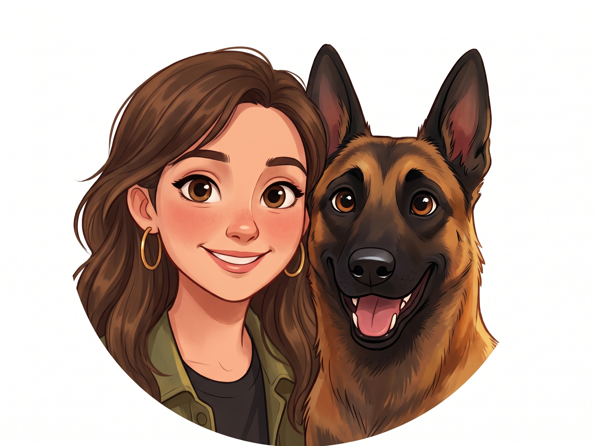
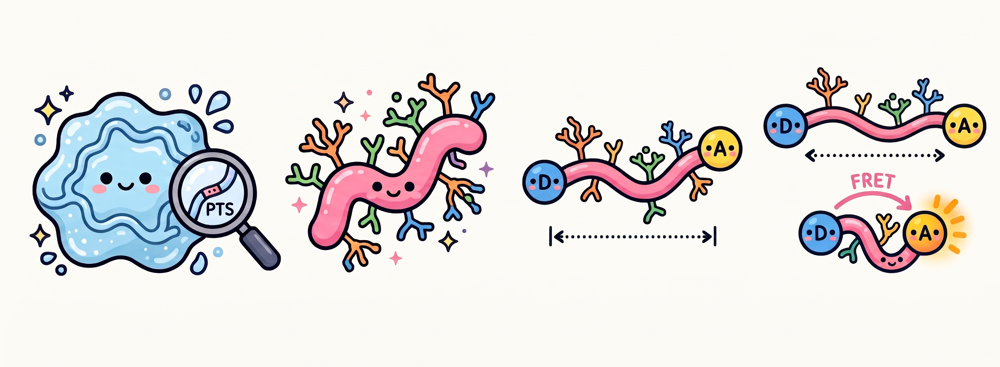

I’m a PhD student in Prof. Deborah Fass’s lab in the Department of Chemical and Structural Biology at the Weizmann Institute of Science.
My academic path began at Ben-Gurion University of the Negev, where earning my B.Sc. and M.Sc. in Biotechnology Engineering sparked a deep curiosity that led me into structural biology and biophysics.
My doctoral research explores the fascinating world of mucins—the heavily glycosylated proteins that form the protective mucus hydrogel barriers in our bodies—as well as protein disulfide mechanisms.
Specifically, I investigate how densely packed sugar chains (O-glycosylation) and amino acid sequences shape the structure and conformational dynamics of mucin PTS regions (such as MUC2, MUC5AC, and MUC5B).
To look at these molecules up close, I combine single-molecule FRET (smFRET) measurements (in collaboration with Prof. Hagen Hofmann's group) with structural visualization and computational tools.

When I step away from the lab and code editor, here is how I love spending my time:
Unwinding on the mat to recharge, build strength, and find balance after long days of experiments.
Getting lost in a great book whenever I have a quiet moment with a cup of coffee or tea.
Going on daily walks, runs, and outdoor adventures with my energetic Belgian Malinois, Bruno.